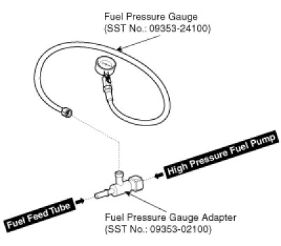
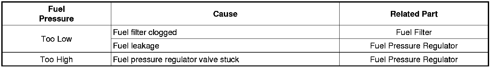
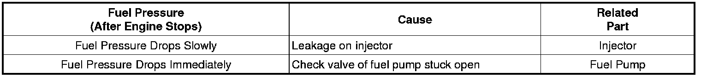

Fuel Pressure: Testing and Inspection
Fuel Pressure Test
1. Release the residual pressure in fuel line .
CAUTION:
When removing the fuel pump relay, a Diagnostic Trouble Code (DTC) may occur. Delete the code with the GDS after completion of "Release Residual Pressure in Fuel Line" work.
2. Install the Special Service Tool (SST).
(1) Disconnect the fuel feed tube from the delivery pipe.
CAUTION:
There may be some residual pressure even after "Release Residual Pressure in Fuel Line" work, so cover the hose connection with a shop towel to prevent residual fuel from spilling out before disconnecting any fuel connection.
(2) Install the special service tool for measuring the fuel pressure in between the fuel feed tube and the fuel delivery pipe .

3. Inspect fuel leakage on connections among the fuel feed tube, the delivery pipe, and the SST components with IG ON.
4. Measure Fuel Pressure.
(1) Start the engine and measure the fuel pressure at idle.
Fuel Pressure:324 - 363 kPa (3.3 - 3.7 kgf/cm2, 46.9 - 52.6 psi)
NOTE:
If the fuel pressure differs from the standard value, repair or replace the related part .

(2) Stop the engine, and then check for the change in the fuel pressure gauge reading.
Standard Value:The gauge reading should hold for about 5 minutes after the engine stops
NOTE:
If the gauge reading should not be held, repair or replace the related part .

(3) Turn the ignition switch OFF.
5. Release the residual pressure in fuel line .
CAUTION:
When removing the fuel pump relay, a Diagnostic Trouble Code (DTC) may occur. Delete the code with the GDS after completion of "Release Residual Pressure in Fuel Line" work.
6. Test End
(1) Remove the Special Service Tool (SST) from the fuel feed tube and the delivery pipe.
(2) Connect the fuel feed tube and the delivery pipe.